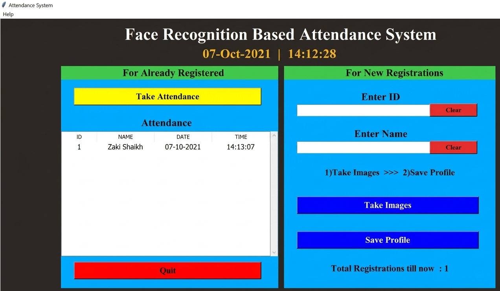
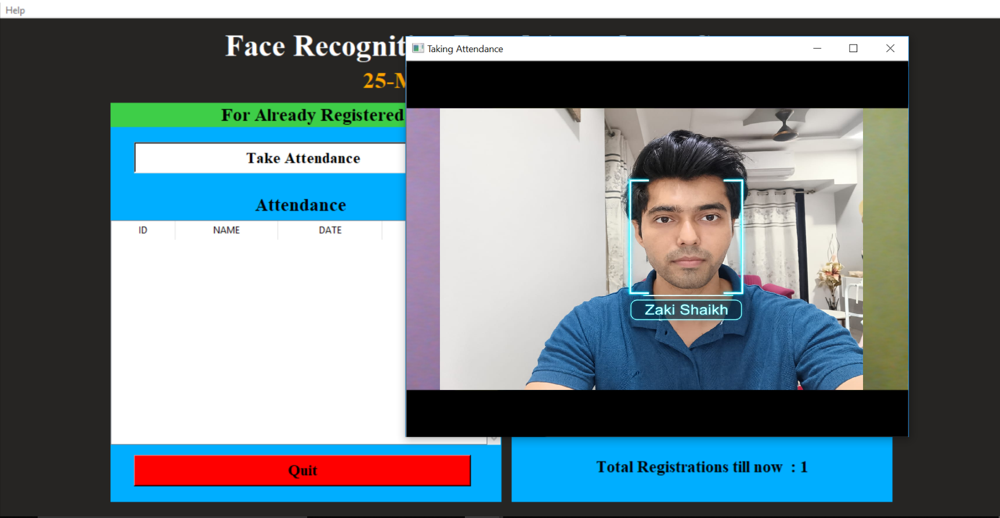
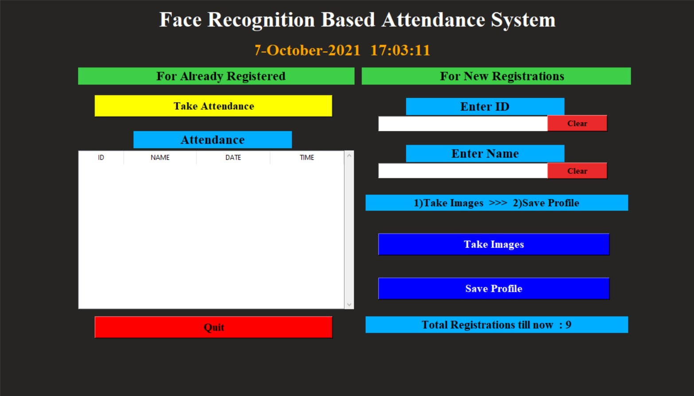
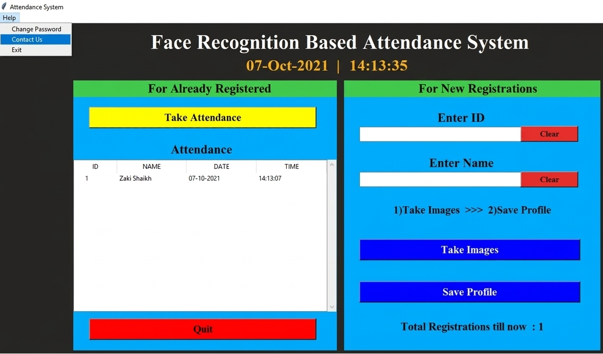

About the Project
This project is a Python-based attendance management system that uses facial recognition to identify registered users and automatically record their attendance.
The system provides a graphical user interface using Tkinter and uses OpenCV with the LBPH face recognition algorithm for face-based identification.
Cybersecurity Focus
The system is designed with security-focused attendance controls to reduce common attendance-related risks.
- Proxy Attendance: Face recognition verifies the registered person before attendance is recorded.
- Unauthorized Registration: New-person registration requires password authentication.
- Identity Impersonation: Attendance is associated with the registered facial identity.
- Record Tracking: Attendance is automatically stored with ID, name, date and time.
- Auditability: Attendance records can be reviewed for verification.
Technologies Used
Security Features
- Face-based identity verification
- Password-protected user registration
- Automated attendance logging
- Daily attendance records
- Date and time tracking
- Reduced risk of proxy attendance
Project Screenshots

Main Screen

Taking Attendance

Attendance Records

Help Option
Future Security Enhancements
- Liveness detection to help prevent photo/video spoofing
- Encrypted data storage
- Secure database instead of CSV storage
- Password hashing
- File-integrity monitoring
- Security event logging
Project Repository
View the complete source code, documentation and project files on GitHub.
GitHub Repository